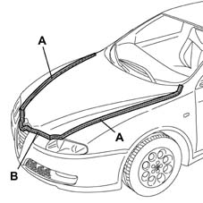

7025A LOCATION OF BONNET WIND NOISE
- Path
- Test > 70 FITTINGS > 7025 COMPARTMENT LIDS > 7025A LOCATION OF BONNET WIND NOISE
- Kind
- test / check procedure
- Applies to
- all engines; all production periods
- Interactive page
- https://sloeber94.github.io/elrnDB-aGt/en/#/125000814
Applies to: all engines; all production periods
Tape the various areas shown with masking tape.

Conduct a road test, gradually bringing the vehicle up to the speed where the noise starts, checking whether the noise disappears.
Remove the masking tape from area A and repeat the road test: if the rustling noise persists, the noise is coming from the side area of the lid.
Remove the masking tape from area B and repeat the road test: if the rustling noise persists, the noise is coming from the front area of the lid.